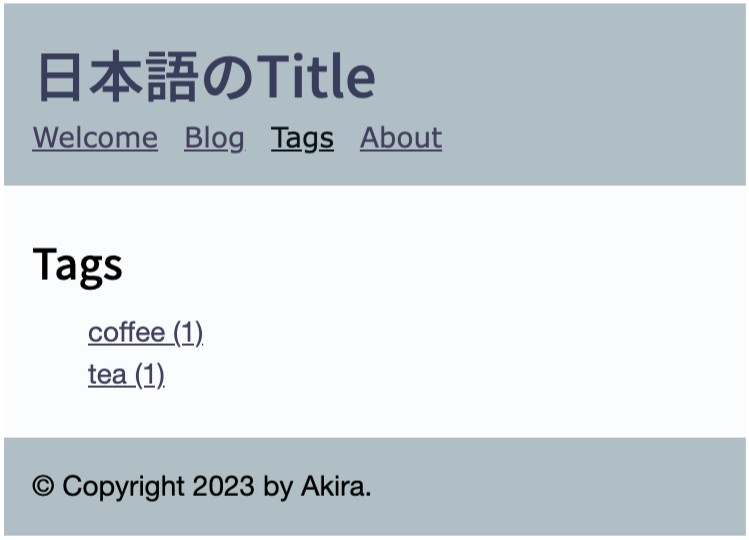

タグ機能のプラグインが提供するtagweights()を利用してタグの一覧とその記事数を表示するテンプレートを作成します。
{% extends "layout.html" %}
{% block title %}{{ this.title }}{% endblock %}
{% block body %}
<div class="tag-page">
<h2>{{ this.title }}</h2>
<ul>
{% if tagweights() %}
{% for tag, weight in (tagweights() | dictsort(by='value', reverse=true)) %}
<li><a href="{{ ('/blog@tag/' ~ tag ) | url }}">{{ tag }} ({{ weight.count }})</a></li>
{% endfor %}
{% else %}
<li>No tags.</li>
{% endif %}
</ul>
</div>
{% endblock %}
テンプレートは、データモデルの他に、コンテンツファイルから呼び出すことができます。まずcontnetディレクトリ下に、tagsというディレクトリを作成します。
|- content/
|- tags/
|- contents.lr
tagsディレクトリ下のcontents.lrでタグ一覧のテンプレートを呼び出します。
title: Tags
---
_template: tags.html
ヘッダーメニューのprojectsをtagsへ書き換えると、メニューからタグ一覧のページを呼び出せるようになります。
<ul class="nav navbar-nav">
<li{% if this._path == '/' %} class="active"{% endif
%}><a href="{{ '/'|url }}">Welcome</a></li>
{% for href, title in [
['/blog', 'Blog'],
['/projects', 'Projects'],
['/tags', 'Tags'],
['/about', 'About']
] %}
